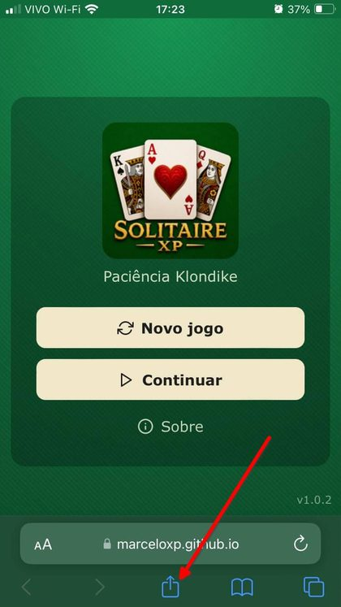
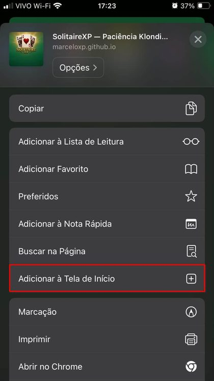
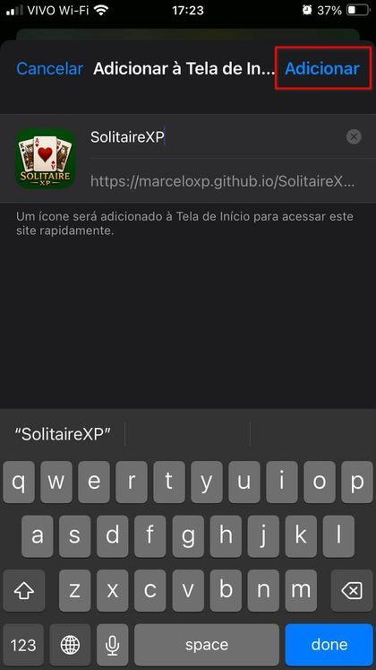
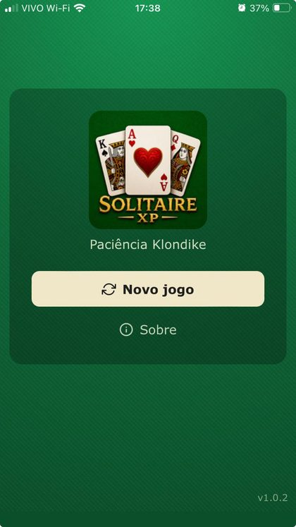
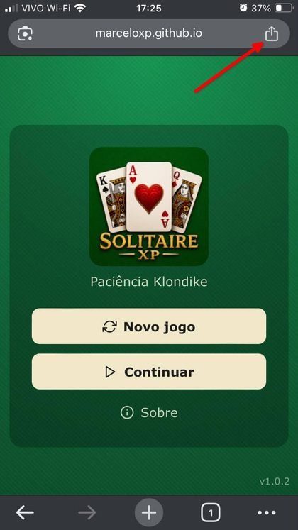
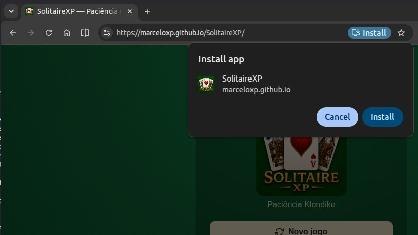

Como instalar o SolitaireXP no seu dispositivo
Instale como um app de verdade: ícone na tela inicial, abre em tela cheia (sem barra do navegador) e funciona mesmo sem internet.
iPhone / iPad — Safari
No iOS, a instalação é sempre manual e só funciona pelo Safari (outros navegadores, mesmo o "Chrome" do iPhone, não têm essa opção — no fundo, todos usam o motor do Safari).
Abra o Safari e acesse o SolitaireXP.
Toque no botão Compartilhar (o quadrado com a seta para cima), na barra inferior.
Role a lista de opções e toque em "Adicionar à Tela de Início".
Confirme tocando em "Adicionar", no canto superior direito.




Usando o Chrome no iPhone em vez do Safari? O processo é o mesmo, só que o botão Compartilhar fica no canto superior direito da barra de endereço, em vez do rodapé:

Android — Google Chrome
No Android, o Chrome costuma até sugerir a instalação sozinho — mas se isso não acontecer, dá pra instalar manualmente:
Abra o Chrome e acesse o SolitaireXP.
Toque no menu de três pontinhos, no canto superior direito.
Selecione "Instalar aplicativo" (ou "Adicionar à tela inicial").
Confirme tocando em "Instalar".
Computador — Windows / Mac (Chrome ou Edge)
Acesse o SolitaireXP pelo Chrome ou Edge.
Na barra de endereço, clique no ícone de instalação (um monitor com uma seta, ou três quadradinhos com um "+").
Clique em "Instalar" na janela que aparecer.

Não achou a opção? Ela só aparece quando o navegador reconhece o site como instalável — abra a página normalmente (não em aba anônima) e espere ela carregar por completo antes de procurar no menu.